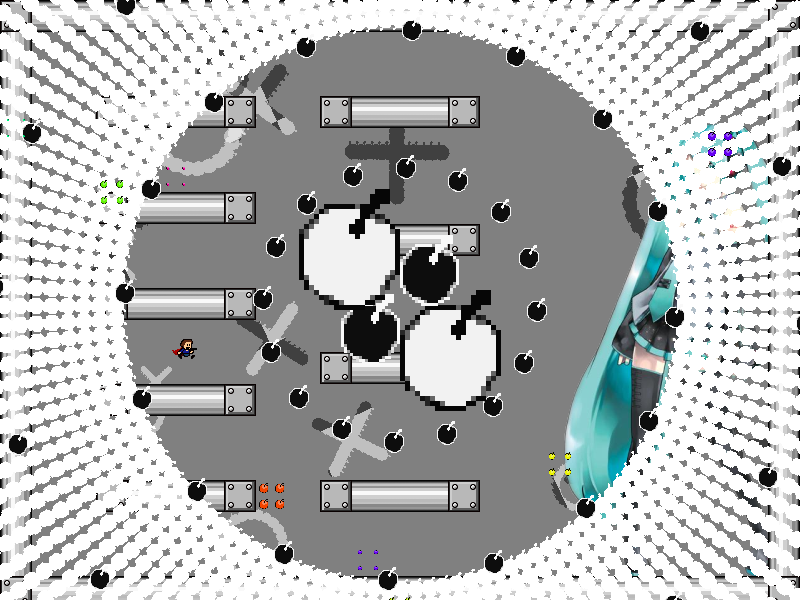
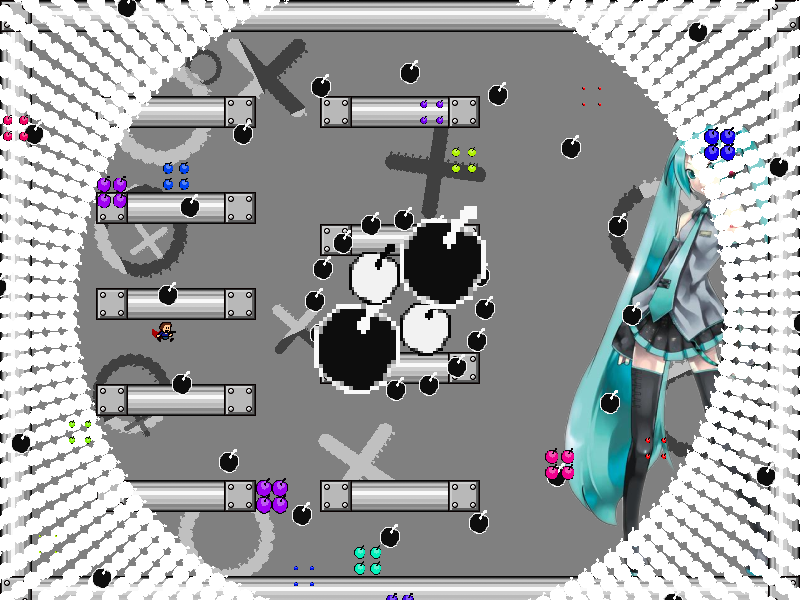
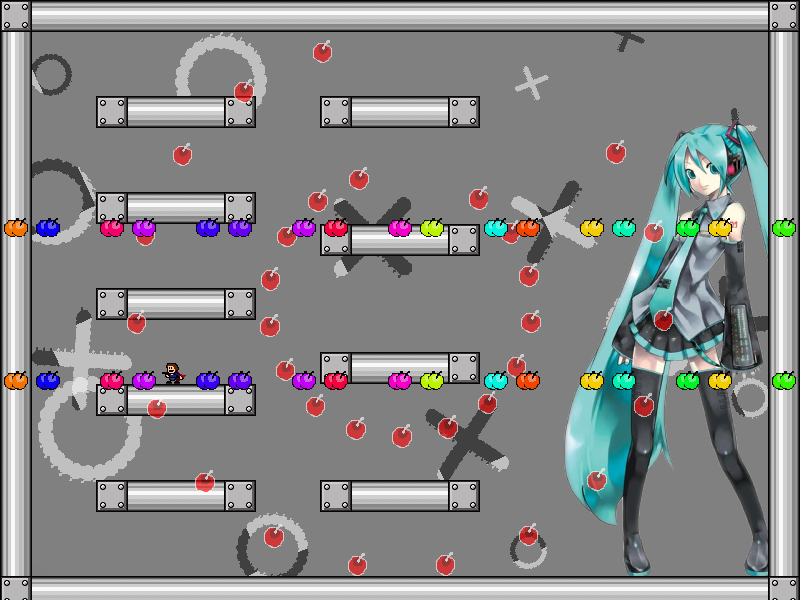

chapter6 - section3

| creator | segment | label | jump |
|---|---|---|---|
| NN | 1:19.90~1:20.80 | P*A/Q/Q | double |
6-2の解答に対応する、角度のみがランダムな弾幕です。
原理自体は2-3と同様であり、6-2において画面中央を中心として生成される同心円状弾幕の色に関して、これらは各時刻におけるプレイヤーの位置について1:19.90において画面中央から生成される同心円状弾幕に被弾する位置であるかどうかを示しています（fig.6-3.1.a~fig.6-3.2.b）。



2-3では基本的に横軸に関して安全な位置さえ把握すれば回避可能であったのに対し、6-3では6-2におけるプレイヤーの位置に対する同心円状弾幕の色の切り替わり（黒→赤、赤→黒、変化なし）から角度そのものを判断する必要があるという点において差異が存在します。